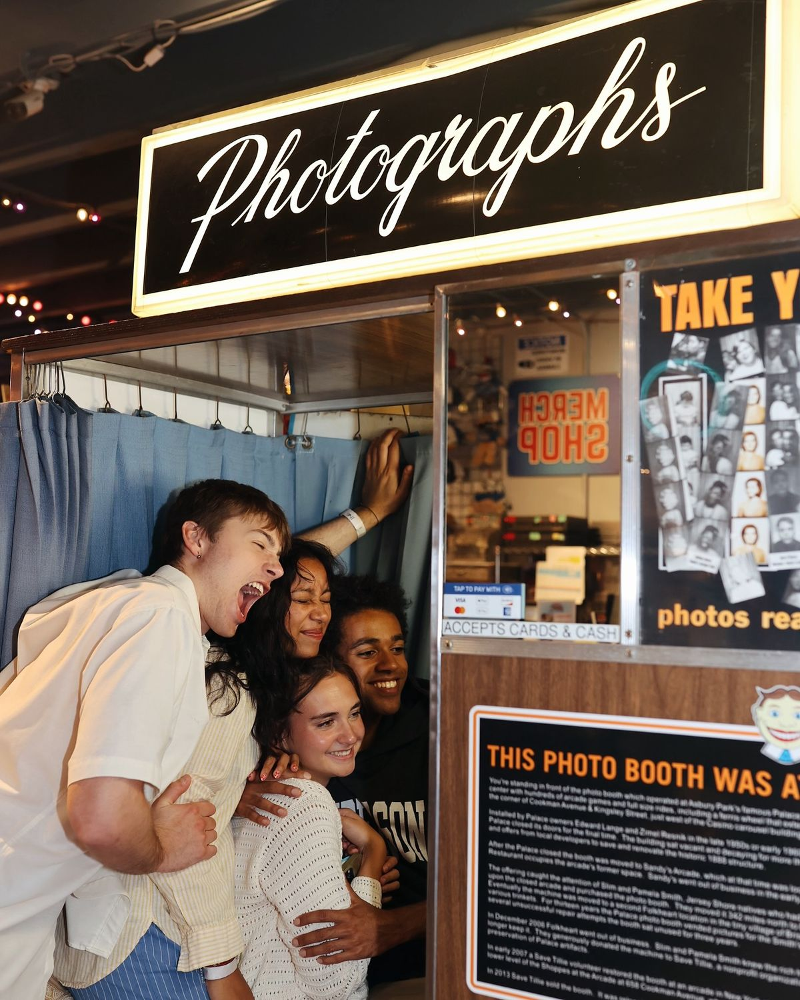
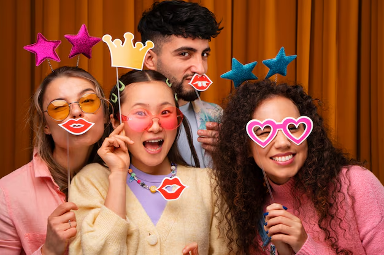
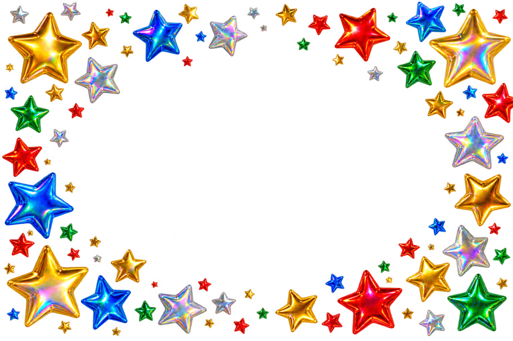

Toca para comenzar


3
¡Foto lista!
¿Te gustó?
podes volver a intentarlo
¡Elegí un fondo!
Estás a un paso de obtener tu foto
Escaneá el código para descargarla y compartirla 📸
Compartila en tu Instagram y etiquetanos
@frameit
Volviendo a pantalla principal en: 2 minutos